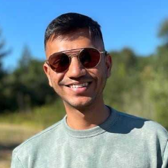

about
About Personalized Learning²
PL² aspires to bridge opportunity gaps through personalized learning.
Our Vision
More than 60 years after the Supreme Court's ruling to desegregate schools, American K-12 education remains marred by strikingly inequitable access, opportunities, and learning outcomes across racial groups and income classes. These gaps are especially high in mathematics - a key gateway to high-paying careers in the 21st century - and they perpetuate inequalities across generations.
Our vision is to build a connective network between Pittsburgh-based universities, school districts, and community organizations that will develop and test an infrastructure of scalable social interaction techniques, software tools, and data-driven continuous improvement to personalize learning for the whole child.
This network will combine the expertise of the University of Pittsburgh's Center for Urban Education - a nationally recognized center of excellence for research and service in urban education - with the strengths of Carnegie Mellon University's LearnLab and affiliated initiatives in the domains of educational technology, AI, and learning science.

The Team
Ken Koedinger
Principal Investigator, CMU

Elizabeth McLaughlin
Research Scientist, CMU

Shivang Gupta
Product Lead, CMU HCII

Dr. Danielle Chine
Postdoctoral Fellow, CMU
Dr. Adetunji Adeniran
Postdoctoral Fellow, CMU
Cindy Tipper
Software Engineer, CMU
Joe Kopko
Software Engineer, CMU

Hui Cheng
QA Engineer, CMU

Dr. Maggie Hannan
Research Scientist, CMU

Dr. Paulo Carvalho
Research Scientist, CMU
Jamie Park
UX Designer, CMU
Grace Joseph
UX Designer, CMU
Previous Collaborators
Dr. Elizabeth Richey, Dr. Nikki Lobczowski, Peter Schaldenbrand